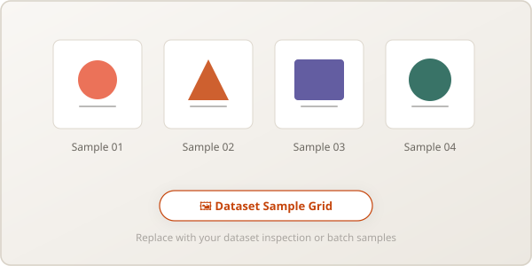
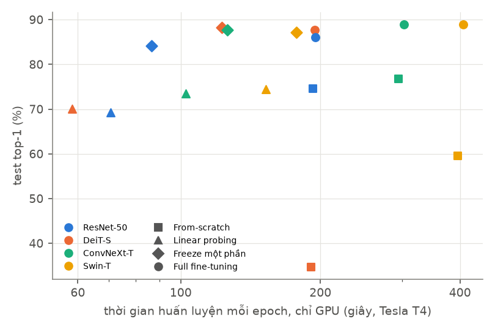
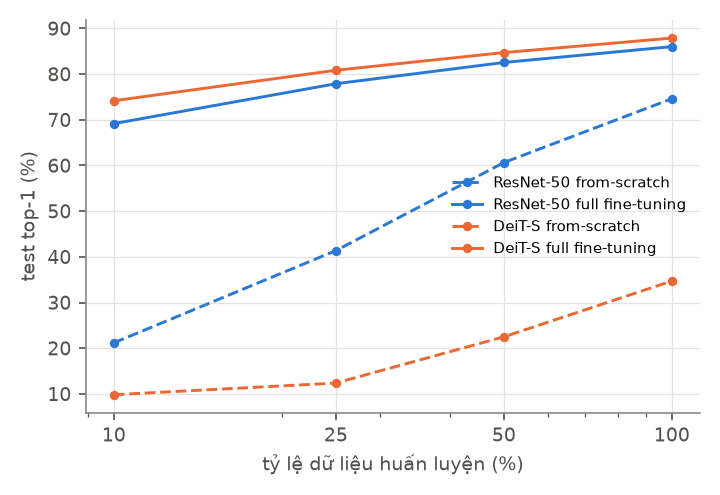

Nhóm chọn Food-101 [1] và dùng toàn bộ tập dữ liệu (không lấy subset). Dưới đây là mô tả tập dữ liệu, giấy phép, cách chia, tiền xử lý và tăng cường dữ liệu.
| Thông số | Mô tả / Giá trị |
|---|---|
| Tập dữ liệu lựa chọn | Food-101 (Bossard, Guillaumin, Van Gool, ECCV 2014) [1]: ảnh món ăn, 101 lớp. Không thuộc nhóm bị loại (MNIST / Fashion-MNIST / CIFAR-10). Trang chủ: data.vision.ee.ethz.ch/cvl/datasets_extra/food-101 · Bản trên Hugging Face: ethz/food101. |
| Nguồn & giấy phép | Giấy phép: chưa rõ. Dataset card trên Hugging Face ghi license là “unknown” [16]; phần Licensing Information nêu ảnh đến từ Foodspotting, không thuộc sở hữu của ETH Zürich, và mọi việc sử dụng vượt quá “scientific fair use” phải được thỏa thuận với chủ sở hữu ảnh theo điều khoản của Foodspotting [16]. Theo bản lưu trữ ngày 23/12/2017 của điều khoản Foodspotting (hiệu lực từ 17/10/2012) [17], người đóng góp giữ bản quyền nội dung, Foodspotting được cấp quyền sử dụng rộng (gồm quyền cấp phép lại), còn việc bên thứ ba sử dụng nội dung cần văn bản cho phép của Foodspotting hoặc chủ sở hữu. Vì nhóm chưa kiểm chứng độc lập phạm vi giấy phép áp dụng cho bản phân phối Food-101 và cho cách sử dụng của nhóm, tập dữ liệu không được coi là tài nguyên mở cho việc sử dụng và phân phối không hạn chế. Nhóm chỉ dùng dữ liệu cho mục đích học tập và nghiên cứu trong bài tập lớn của môn học, và không công bố ảnh gốc, ảnh đã resize, ảnh đã tăng cường/làm nhiễu, hay bất kỳ cache nào chứa ảnh (các bản này được sinh lại bằng mã nguồn với seed cố định). Nhóm công bố mã nguồn, cấu hình, trọng số mô hình và logits dự đoán (không chứa ảnh). Báo cáo công khai chỉ chèn một số ít ảnh minh họa cỡ nhỏ khi cần trình bày kết quả phân tích. Mọi hình thức phân phối công khai khác sẽ chỉ được xem xét sau khi làm rõ điều kiện cấp phép. Nguồn: [1], [16], [17]. |
| Lý do chọn |
|
| Số lượng lớp (Classes) | 101 |
| Kích thước tập huấn luyện | 70,700 ảnh (700 ảnh/lớp) |
| Kích thước tập validation | 5,050 ảnh (50 ảnh/lớp), tách phân tầng (stratified) từ tập train chính thức |
| Kích thước tập kiểm thử | 25,250 ảnh (250 ảnh/lớp), tập test chính thức, giữ nguyên, không dùng khi huấn luyện hay chọn siêu tham số |
| Cách chia dữ liệu |
Tập train chính thức (750 ảnh/lớp) được chia thành 700 ảnh train + 50 ảnh validation mỗi lớp bằng seed
42; danh sách
lưu trong split.json (SHA-256, 16 ký tự đầu: 75ed81bfe380c089) và được commit
vào repo.
Validation chỉ dùng để chọn learning rate và để fit temperature (hiệu chỉnh độ tin cậy). Mọi con số báo
cáo cuối
cùng là trên tập test, ở epoch cuối cùng của mỗi lần chạy (không chọn checkpoint tốt nhất theo val).
|
| Tiền xử lý & tăng cường dữ liệu | Resize offline một lần về cạnh ngắn 256 px; khi train: RandomResizedCrop 224, lật ngang, RandAugment, Mixup/CutMix và label smoothing; khi đánh giá: Resize 256 → CenterCrop 224. Một công thức duy nhất cho mọi mô hình và mọi chế độ. Toàn bộ tham số chính xác (thư viện, nội suy, xác suất, loss, lịch LR) nằm ở bảng “Công thức huấn luyện chi tiết” tại Mục 03. |
| Lưu ý về chất lượng nhãn | Theo tác giả [1], nhãn train được gán tự động theo phân loại món của Foodspotting và cố ý không làm sạch, nên có nhiễu nhãn; nhãn test đã được rà soát thủ công. Hệ quả: độ chính xác tối đa đạt được bị giới hạn, và validation (lấy từ phần train nhiễu) chỉ dùng để chọn siêu tham số. |

Hai họ kiến trúc được so sánh ở cùng quy mô tham số và chi phí tính toán, đều dùng trọng số pretrained
ImageNet-1k từ thư viện
timm [7] (cùng dữ liệu pretrain). Cặp 1 là cam kết; cặp 2 là mở rộng, chạy nếu còn tài nguyên tính
toán.
Chi phí tính toán được báo cáo bằng GMACs (1 MAC = 1 phép nhân-cộng), đo bằng một công
cụ và một
quy ước cho cả bốn kiến trúc: torch.utils.flop_counter.FlopCounterMode, một lượt forward với đầu
vào 1×3×224×224 và
đầu ra 101 lớp, tắt fused attention để các phép nhân ma trận của attention được đếm; chỉ đếm phép nhân ma
trận/tích chập
(không đếm element-wise, softmax, chuẩn hóa); FlopCounterMode tính 1 MAC = 2 FLOPs nên GMACs = GFLOPs/2. Đối
chiếu bằng
fvcore cho 4.111 / 4.608 / 4.470 / 4.509 GMACs (ResNet-50 / DeiT-S / ConvNeXt-T / Swin-T), cao hơn
0.2–0.6% so với FlopCounterMode (có thể do fvcore đếm thêm một số phép chuẩn hóa và pooling). Các con số “FLOPs”
trong bài báo gốc thực chất là MACs, và chỉ dùng để kiểm tra thô, không thay thế kết quả đo.
resnet50.a1_in1k (công thức huấn luyện “ResNet strikes back” [3]).
deit_small_patch16_224.fb_in1k.
convnext_tiny.fb_in1k.
swin_tiny_patch4_window7_224.ms_in1k.
Vì sao không dùng ViT-Base/16 (~86M tham số): so sánh với ResNet-50 sẽ lẫn lộn ảnh hưởng của kiến trúc với ảnh hưởng của quy mô mô hình, đồng thời chi phí huấn luyện cao hơn nhiều. Lưu ý khi diễn giải: các trọng số pretrained của hai họ được huấn luyện bằng các công thức khác nhau (ví dụ ResNet-50 “a1” dùng recipe huấn luyện mạnh [3]), nên một phần khác biệt có thể đến từ recipe pretrain; nhóm sẽ nêu rõ điều này khi thảo luận.
Với mỗi mô hình ở cặp 1, nhóm chạy 4 cấu hình (tổng 8 cấu hình lõi) trên cùng một split. Tỷ lệ tham số trainable dưới đây đã được đo trên mô hình thực (đầu ra 101 lớp).
| Chế độ | Khởi tạo | ResNet-50: phần được huấn luyện | DeiT-S: phần được huấn luyện | Epoch |
|---|---|---|---|---|
| From-scratch | Ngẫu nhiên | Toàn bộ (100%) | Toàn bộ (100%) | 40 |
| Freeze toàn bộ backbone (Linear probing) | ImageNet-1k | Chỉ lớp phân loại (0.9%) | Chỉ lớp phân loại (0.2%) | 10 |
| Freeze một phần | ImageNet-1k | layer4 + head (64.0%); đóng băng stem → layer3 | Block 7–12 + norm + head (49.2%); đóng băng patch embedding và block 1–6 | 10 |
| Full fine-tuning | ImageNet-1k | Toàn bộ (100%) | Toàn bộ (100%) | 10 |
Một công thức duy nhất cho mọi mô hình và chế độ, để chênh lệch kết quả quy được cho kiến trúc/chế độ huấn luyện. Cùng các giá trị này nằm trong các file cấu hình YAML được commit vào repo.
| Hạng mục | Giá trị chính xác |
|---|---|
| Phần mềm | Python 3.13, PyTorch 2.11.0, torchvision 0.26.0, timm 1.0.30. Phiên bản Pillow và NumPy được ghi vào
results/*.json của mỗi lần chạy.
|
| Resize offline | Pillow: cạnh ngắn → 256 px (chỉ thu nhỏ, không phóng to), nội suy BICUBIC, lưu JPEG chất lượng 90. |
| Biến đổi khi train (theo thứ tự) |
(1) RandomResizedCrop(224, scale=(0.25, 1.0), ratio=(3/4, 4/3)), nội suy BILINEAR;
scale khác mặc định (0.08, 1.0).(2) RandomHorizontalFlip(p=0.5).(3) RandAugment(num_ops=2, magnitude=9, num_magnitude_bins=31, interpolation=NEAREST, fill=None)
của torchvision [10].(4) PILToTensor (uint8).(5) Trên GPU: chuẩn hóa mean (0.485, 0.456, 0.406), std (0.229, 0.224, 0.225). (6) Mixup/CutMix (dòng dưới). |
| Độ mạnh của RandAugment |
Mỗi ảnh nhận 2 phép chọn ngẫu nhiên có hoàn lại trong 14 phép, luôn được áp dụng, dấu của phép có dấu
được chọn ngẫu nhiên.
Chỉ số magnitude=9 trên 31 mức tương ứng 9/30 = 30% biên độ tối đa của mỗi phép (ví dụ xoay
±9°, shear ±0.09,
độ sáng/màu/tương phản ±0.27). Mức này nhẹ hơn nhiều so với “rand-m9” trong timm/DeiT (9/10 =
90% biên độ).
Nhóm giữ cấu hình này, giống nhau cho mọi mô hình, và không tinh chỉnh.
|
| Mixup / CutMix |
timm.data.Mixup(mixup_alpha=0.8, cutmix_alpha=1.0, cutmix_minmax=None, prob=1.0, switch_prob=0.5, mode='batch',
correct_lam=True, label_smoothing=0.1, num_classes=101) [8][9].
Mỗi batch (prob=1.0) nhận đúng một trong hai: Mixup với xác suất 0.5 (λ ~
Beta(0.8, 0.8)), hoặc CutMix với xác suất
0.5 (λ ~ Beta(1, 1), sau đó λ được hiệu chỉnh theo diện tích hộp thực tế sau khi cắt biên). Hai phương
pháp loại trừ nhau trong cùng
một batch. Mỗi mẫu được ghép với mẫu đối xứng trong batch (đảo thứ tự batch); batch 64 (chẵn),
drop_last=True.
Việc chọn phương pháp và λ dùng bộ sinh số ngẫu nhiên toàn cục của NumPy trong tiến trình chính, nên
được seed và được lưu/khôi phục cùng checkpoint.
|
| Nhãn mềm & loss | Nhãn đích y = λ·ys(a) + (1−λ)·ys(b), với ys(c) = (1−ε)·onehot(c) + ε/101, ε = 0.1 [11]. Label smoothing được áp dụng một lần duy nhất, bên trong Mixup. Loss huấn luyện là soft-target cross-entropy −Σ y·log softmax(logit), tính ở fp32, và không truyền thêm tham số label smoothing vào hàm loss. Khi đánh giá (val/test) dùng cross-entropy với nhãn cứng, không smoothing; NLL và ECE tính trên nhãn cứng. |
| Biến đổi khi đánh giá | Resize(256) (BILINEAR) → CenterCrop(224) → chuẩn hóa mean/std ImageNet; cùng
một phép cho cả bốn mô hình. |
| Tối ưu hóa |
AdamW [12] (β = (0.9, 0.999), ε = 1e-8), weight decay 0.05 chỉ cho tham số từ 2 chiều trở lên (không áp
dụng cho bias và tham số chuẩn hóa);
không gradient clipping; không EMA; drop_rate=0 và drop_path_rate=0 được đặt
tường minh cho mọi mô hình
(không dùng giá trị mặc định riêng của từng mô hình). Mixed precision fp16 với GradScaler động. Phần bị
đóng băng đặt ở chế độ eval
(BatchNorm không cập nhật thống kê).
|
| Lịch learning rate | Theo từng iteration: warmup tuyến tính từ 1% LR đỉnh lên LR đỉnh trong 5% tổng số bước đầu (0.5 epoch với 10 epoch, 2 epoch với 40 epoch), sau đó giảm cosine tới 1% LR đỉnh ở bước cuối. Cùng hình dạng lịch cho lượt quét LR và các lần chạy chính. |
| Batch & dữ liệu | Batch 64, drop_last=True, 2 worker, xáo trộn mỗi epoch. Thứ tự dữ liệu và ngẫu nhiên của
augmentation sinh từ generator seed theo (seed, epoch). |
| Seed & tái lập |
Seed 0/1/2 (lượt quét LR dùng seed 0). Trạng thái RNG của Python, NumPy, PyTorch, CUDA cùng GradScaler,
optimizer, scheduler được lưu
trong checkpoint mỗi epoch; khôi phục RNG cho kết quả trùng khớp từng bit trên mô hình thử (khi bật chế
độ xác định). Với huấn luyện
thật, cudnn.benchmark được bật để nhanh hơn, nên kết quả không bảo đảm trùng từng bit giữa
các lần chạy hoặc giữa các loại
GPU; sai khác được ước lượng từ 3 seed.
|
| Epoch báo cáo | Epoch cuối cùng; không chọn checkpoint theo validation. |
| Nhóm chế độ (mỗi mô hình) | Lưới LR đỉnh | Áp dụng cho |
|---|---|---|
| Freeze toàn bộ backbone | {3e-4, 1e-3, 3e-3} | Linear probing |
| Fine-tune (quét bằng full fine-tuning) | {3e-5, 1e-4, 3e-4} | Freeze một phần và full fine-tuning dùng chung một LR |
| From-scratch | {1e-4, 3e-4, 1e-3} | From-scratch |
Kế hoạch ban đầu (lập trước khi chạy, sắp theo thứ tự ưu tiên; chi phí ước tính bằng GPU-giờ Tesla T4 từ tốc độ đo end-to-end). Thực tế toàn bộ các lần chạy được thực hiện trên Kaggle (2 GPU T4 chạy song song) với kho lưu trữ chung trên Hugging Face; tất cả các mức, kể cả các mức mở rộng, đều đã chạy xong:
| Mức | Thí nghiệm | Trả lời câu hỏi nào | GPU-giờ (T4) |
|---|---|---|---|
| Cam kết | Quét LR (chạy đầu tiên) | So sánh công bằng giữa các kiến trúc | ~0.8 |
| Cam kết | 8 cấu hình lõi, 1 seed (6 pretrained × 10 epoch + 2 scratch × 40 epoch) | Các so sánh bắt buộc của đặc tả | ~9.6 |
| Cam kết | Ablation theo kích thước dữ liệu: 10% / 25% / 50% train (cân bằng lớp, lồng nhau) × {scratch 40 epoch, full fine-tune 10 epoch} × 2 mô hình | Khi nào ViT cần pretrain | ~6.4 |
| Cam kết | Thêm 2 seed cho 6 cấu hình pretrained (tổng 3 seed) | Phương sai và độ tin cậy của số liệu | ~7.8 |
| Mở rộng 1 | ConvNeXt-T vs Swin-T, 3 chế độ pretrained | Khác biệt do họ kiến trúc hay do đời thiết kế | ~4.7 |
| Mở rộng 2 | DeiT-S from-scratch 100 epoch (đối chứng bất đối xứng) | Khoảng cách của ViT có do huấn luyện quá ngắn không | ~7.3 |
| Mở rộng 3 | ConvNeXt-T và Swin-T from-scratch 40 epoch | Lặp lại so sánh scratch với cặp 2 | ~8.4 |
Tổng phần cam kết khoảng 24.6 GPU-giờ (dự trù ban đầu thêm ~25% cho khởi động lại phiên và lỗi). Số liệu thời gian/bộ nhớ so sánh giữa các kiến trúc lấy từ một lần đo kiểm soát trên một loại GPU duy nhất (xem Mục 04), vì thời gian chạy thực bị giới hạn bởi bộ nạp dữ liệu và có thể khác nhau giữa các phiên.
Bảng so sánh chéo giữa CNN và Vision Transformer dưới tất cả các chế độ: From-scratch vs Pretrained, và 3 kiểu đóng băng (Backbone Frozen, Partial Freeze, Full Fine-tuning). Số liệu là mean ± std (độ lệch chuẩn mẫu) trên 3 seed cho các cấu hình pretrained; From-scratch chỉ có 1 seed. Kết quả được tách thành ba bảng: độ chính xác, chi phí huấn luyện và chi phí suy luận.
| Họ mô hình | Kiến trúc | Chế độ huấn luyện | Trọng số khởi tạo | Tham số trainable | Top-1 Acc (%) | Top-5 Acc (%) | Macro-F1 (%) |
|---|---|---|---|---|---|---|---|
| CNN | ResNet-50 | From-scratch | Random Init | 100,0% | 74,61 | 92,83 | 74,19 |
| CNN | ResNet-50 | Linear Probing (Backbone Frozen) | ImageNet Pretrained | 0,9% | 69,25 ± 0,24 | 90,42 ± 0,10 | 68,85 ± 0,25 |
| CNN | ResNet-50 | Partial Freeze (layer4 + đầu ra) | ImageNet Pretrained | 64,0% | 84,09 ± 0,08 | 96,63 ± 0,06 | 84,06 ± 0,08 |
| CNN | ResNet-50 | Full Fine-tuning | ImageNet Pretrained | 100,0% | 85,99 ± 0,07 | 97,16 ± 0,04 | 85,95 ± 0,06 |
| Transformer | DeiT-S | From-scratch | Random Init | 100,0% | 34,72 | 63,49 | 31,94 |
| Transformer | DeiT-S | Linear Probing (Backbone Frozen) | ImageNet Pretrained | 0,2% | 70,12 ± 0,11 | 90,79 ± 0,04 | 69,82 ± 0,14 |
| Transformer | DeiT-S | Partial Freeze (block 7–12 + đầu ra) | ImageNet Pretrained | 49,2% | 88,27 ± 0,11 | 97,89 ± 0,03 | 88,26 ± 0,11 |
| Transformer | DeiT-S | Full Fine-tuning | ImageNet Pretrained | 100,0% | 87,73 ± 0,13 | 97,63 ± 0,07 | 87,71 ± 0,13 |
| Kiến trúc | Chế độ | Tham số trainable (M / %) | Epoch | Thời gian/epoch, chỉ GPU (s) | Thời gian/epoch, đo thực trên Kaggle (phút) | Tổng thời gian huấn luyện (giờ) | Peak GPU memory khi huấn luyện (MB) |
|---|---|---|---|---|---|---|---|
| ResNet-50 | From-scratch | 23,71 / 100,0% | 40 | 192,9 | 4,7 | 3,15 | 3 161 |
| ResNet-50 | Linear probing | 0,21 / 0,9% | 10 | 70,5 | 4,5 | 0,78 | 470 |
| ResNet-50 | Freeze một phần | 15,17 / 64,0% | 10 | 86,4 | 4,9 | 0,79 | 646 |
| ResNet-50 | Full fine-tuning | 23,71 / 100,0% | 10 | 195,0 | 5,2 | 0,82 | 3 161 |
| DeiT-S | From-scratch | 21,70 / 100,0% | 40 | 191,0 | 5,1 | 3,40 | 2 502 |
| DeiT-S | Linear probing | 0,04 / 0,2% | 10 | 58,3 | 4,9 | 0,79 | 287 |
| DeiT-S | Freeze một phần | 10,69 / 49,2% | 10 | 122,8 | 4,7 | 0,79 | 1 336 |
| DeiT-S | Full fine-tuning | 21,70 / 100,0% | 10 | 194,4 | 4,8 | 0,83 | 2 502 |
Cách đo. Thời gian/epoch, chỉ GPU = 70,700 ảnh / tốc độ huấn luyện đo được (img/s) với
batch 64, AMP fp16, AdamW,
batch tổng hợp đặt sẵn trên GPU (không có bộ nạp dữ liệu), một loại GPU duy nhất trong cùng một phiên; đây là
cột dùng để so sánh các kiến trúc
và chế độ freeze. Thời gian/epoch, đo thực trên Kaggle là thời gian thực của mỗi epoch trong lần huấn
luyện thật (huấn luyện + validation, hai tiến trình chạy song song trên hai GPU T4),
bị giới hạn bởi bộ nạp dữ liệu trên CPU nên các chế độ freeze gần như không nhanh hơn trên cột này.
Tổng thời gian huấn luyện = tổng thời gian các epoch, không tính thời gian chờ giữa các phiên hoặc khởi
động lại.
Peak GPU memory = torch.cuda.max_memory_allocated trong lần đo huấn luyện có kiểm soát
(trọng số, activation, gradient và trạng thái optimizer; không gồm validation).
| Kiến trúc | Tổng tham số (M) | GMACs | Throughput, batch 128 (img/s) | Latency, batch 1: median / p95 (ms) | Peak GPU memory khi suy luận, batch 1 / 128 (MB) |
|---|---|---|---|---|---|
| ResNet-50 | 23,71 | 4,110 | 1 031,8 | 7,23 / 8,42 | 117 / 822 |
| DeiT-S | 21,70 | 4,250 | 1 156,0 | 7,09 / 8,53 | 106 / 472 |
| ConvNeXt-T (mở rộng) | 27,90 | 4,470 | 678,7 | 8,09 / 9,31 | 136 / 1 231 |
| Swin-T (mở rộng) | 27,60 | 4,509 | 452,1 | 13,23 / 15,07 | 140 / 1 719 |
Cách đo. AMP fp16, torch.inference_mode, batch 1 và 128, đồng bộ CUDA quanh mỗi
lần gọi; latency là median (và p95) thời gian của một lần
gọi, throughput = batch / latency median. GMACs theo quy ước ở Mục 02. Tất cả số liệu chi phí được đo bằng cùng
một script (cost_bench.py) trên Tesla T4 (PyTorch 2.11.0+cu128, timm 1.0.30).
Latency batch 1 bị chi phối bởi chi phí khởi chạy kernel nên không tỷ lệ với GMACs; ở batch lớn, throughput phản
ánh tải tính toán rõ hơn. Ở suy luận ResNet-50 và DeiT-S gần như tương đương (7,2 và 7,1 ms ở batch 1),
trong khi Swin-T chậm hơn rõ (13,2 ms) dù GMACs xấp xỉ nhau. Số liệu from-scratch dùng cùng chi phí mỗi bước với
full fine-tuning.


Các nội dung phân tích bắt buộc theo yêu cầu đặc tả (Specs Mục 4 & 7.1.2):
Metric: top-1, top-5, macro-F1 trên tập test; số tham số trainable; GMACs; thời gian mỗi epoch, tổng thời gian huấn luyện; thông lượng và latency suy luận; bộ nhớ GPU đỉnh.
Phân tích bổ sung (chỉ cần suy luận, không huấn luyện thêm; thực hiện sau các thí nghiệm lõi):
Về mất cân bằng lớp: Food-101 cân bằng tuyệt đối (700 / 50 / 250 ảnh mỗi lớp trong split của nhóm), nên không dùng reweighting, oversampling hay focal loss. Vấn đề thực tế là nhiễu nhãn ở tập train, đã nêu ở Mục 01.
Hạn chế đã biết (sẽ được nêu lại trong báo cáo):
Nhóm tách rõ quy trình tái lập chuẩn (chỉ cần repo và báo cáo) khỏi cách nhóm thực sự chạy (các tối ưu để tiết kiệm thời gian). Nguyên tắc: tối ưu chỉ thay đổi kết quả của một bước đến từ đâu, không thay đổi bước đó tính gì.
| Bước | Quy trình chuẩn (chỉ repo) | Cách nhóm thực sự chạy |
|---|---|---|
| Dữ liệu | Tải Food-101 bằng torchvision, resize cạnh ngắn 256 bằng script của repo, chia theo
split.json đã commit (kiểm tra SHA-256 và số ảnh khi khởi động)
|
Bản đã resize được lưu trong kho Hugging Face riêng của nhóm (dl4dl/a1-store, không phân
phối công khai); cùng mã, cùng kết quả |
| Huấn luyện | Mỗi lần chạy một file cấu hình YAML đã commit, chạy bằng lệnh CLI; có chế độ smoke test nhỏ (dưới 10 phút trên một GPU bất kỳ) | Hàng đợi chạy trên Kaggle (hai GPU T4, mỗi GPU một tiến trình), lưu checkpoint nguyên tử vào kho Hugging Face dùng chung, tự động tiếp tục khi mất phiên (đã kiểm tra: khôi phục RNG cho kết quả trùng khớp từng bit trên mô hình thử) |
| Trọng số pretrained | timm tải theo tên và tag cố định | Cache tải sẵn, dùng chung |
| Kết quả | File results/*.json (số liệu, đường cong, cấu hình, môi trường) trong repo; bảng và hình
được sinh lại từ JSON bằng notebook; trọng số cuối và logits đăng trên GitHub Release kèm checksum, có
lệnh đánh giá lại để tái hiện số liệu test trong vài phút |
Checkpoint và log trung gian nằm trong kho Hugging Face (dl4dl/a1-store, đã squash lịch
sử; không phải sản phẩm nộp) |
requirements.txt). Cấu hình khoa học (mô hình, chế độ, epoch, LR, seed, augmentation) nằm trong
YAML được commit; đường dẫn và tham số máy (thư mục dữ liệu, số worker) đi qua biến môi trường/tham số CLI.
pip install -e .); thí nghiệm
là notebook mỏng gọi vào package và các script python -m.load (nạp các
JSON đã lưu, sinh lại bảng và hình, không cần GPU), evaluate (tải trọng số từ Release và đánh giá
lại trên tập test) và rerun (huấn luyện lại). Nhóm đã kiểm tra chế độ load bằng
“fresh clone” trên một runtime Colab mới, không có dữ liệu cache.common/release_manifest.json).